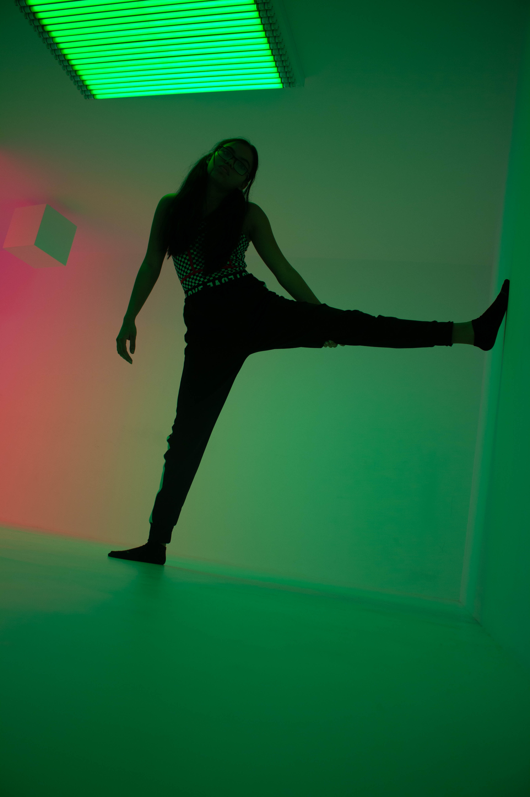

Cultura Hip hop
Breakdance

Popping
Locking
Hip hop new style
House dance

Electro dance

Street Dance este un termen ce denotă mai multe stiluri de dans, ce au evoluat în spații publice precum pe stradă, în curtea școlilor și în cluburi.
Breakdance
Acest dans aproape acrobatic ajunge foarte popular în rândurile puștanilor din zona New York şi implică unele mișcări de picioare extrem de complicate, fiind realizate totodată foarte rapid.
Hip hop new style
Dansul hip-hop se referă la stilurile de street dance realizate ca parte a culturii hip-hop. A fost creat în anii 1970 și popularizat de echipele de dans din Statele Unite.
Popping
Dansul este înrădăcinat prin ritmurile muzicii funk live și se bazează pe contractarea rapidă și relaxarea mușchilor pentru a provoca o smucitură sau poate fi o oprire bruscă în corp
House dance
House-ul este un stil de dans care a aparut datorita muzicii house care isi regaseste radacinile in cluburile din Chicago. Combina miscari complexe si rapide de picioare, cu miscari fluide ale torsului.
Locking
Numele se bazează pe conceptul de mișcări de blocare, ceea ce înseamnă practic înghețarea dintr-o mișcare rapidă și „blocarea” într-o anumită poziție, pentru scurt timp.
Electro dance
Electro dance este o formă frenetică și ciudată a street dance-ului interpretată de obicei pe muzica din cluburi. Se bazează pe un amestesc de stiluri diferite.